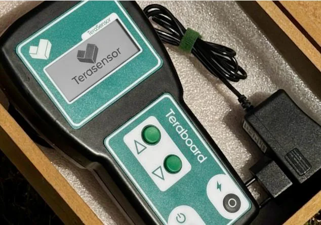
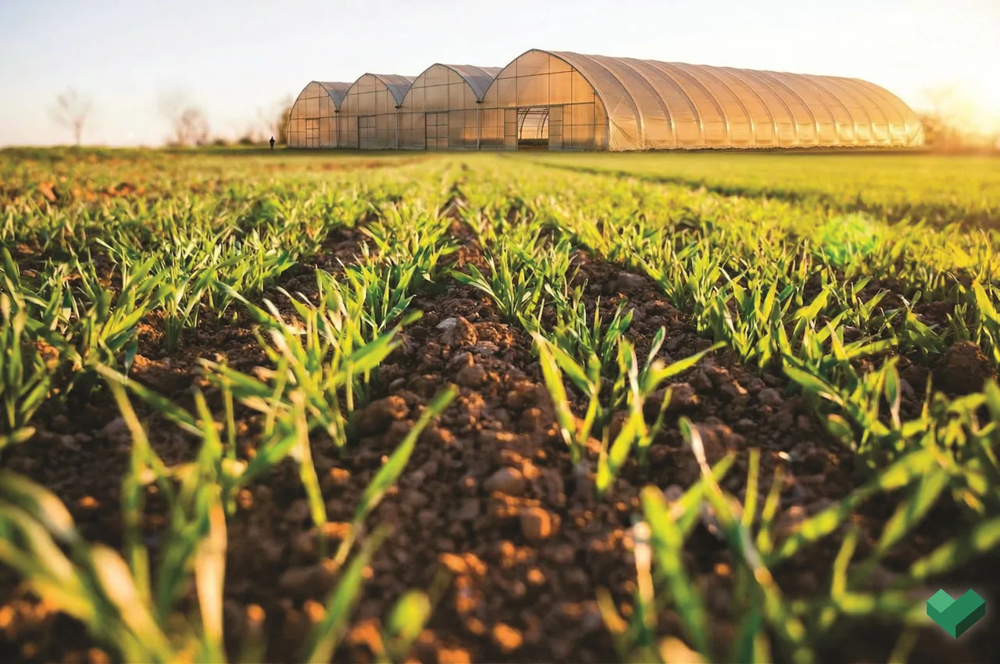

O solo,
finalmente legível.
A TeraBoard projeta hardware e software que transformam medições do solo em decisões técnicas — do diagnóstico portátil à irrigação que se comanda sozinha.
Uma casa de
engenharia do solo.
Somos uma agtech da Serra Fluminense que constrói instrumentos para quem vive do solo. Nascemos ouvindo produtores e agrônomos da região: a decisão de campo boa depende de dado confiável, na hora, no lugar certo. Foi disso que vieram os dois produtos da casa.
Duas ferramentas,
uma linguagem.
Uma vai no bolso e diagnostica; a outra fica na estufa e executa. Juntas, cobrem o caminho inteiro — do sensor à decisão, da decisão à válvula.
TeraSensor
Analisador de solo de bolso. Basta inserir a sonda para ler 6 parâmetros na tela E-ink, guardar até 50 leituras e sincronizar com o app por Bluetooth.

TeraSmart
Plataforma fixa (hardware + app) que monitora solo e clima da estufa e comanda a irrigação e a fertirrigação sozinha, em malha fechada.

Medir
O TeraSensor lê o solo em campo e nomeia cada ponto.
Decidir
O dado vira diagnóstico e receita — no app, com o agrônomo.
Executar
Na estufa, o TeraSmart aplica água e nutriente na dose certa, sozinho.
O que o seu solo
está pedindo?
Mexa nos controles e veja a planta reagir na hora. É exatamente essa leitura que o TeraSensor entrega em campo — e que o TeraSmart usa para agir sozinho.
O solo está na faixa alvo. Nenhuma correção necessária agora.
Faixas ilustrativas para cultivo protegido — no produto, cada cultura tem o seu alvo configurável.
Validação em
campo · em andamento
Ainda não temos cases de safra fechada — e não vamos inventar. O que temos é registro aberto do que já roda. É assim que a gente prefere ganhar confiança.